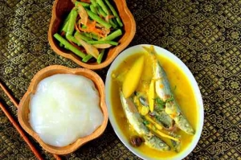
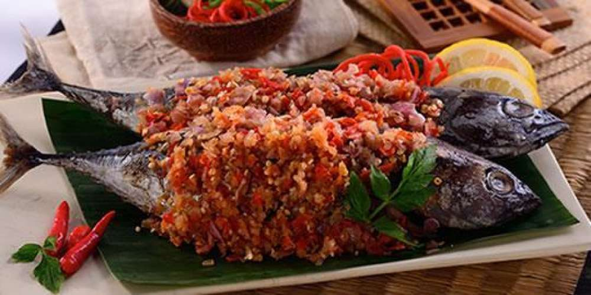
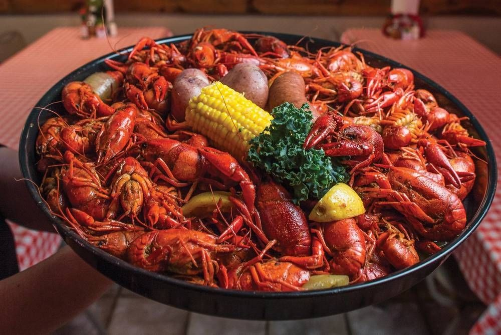
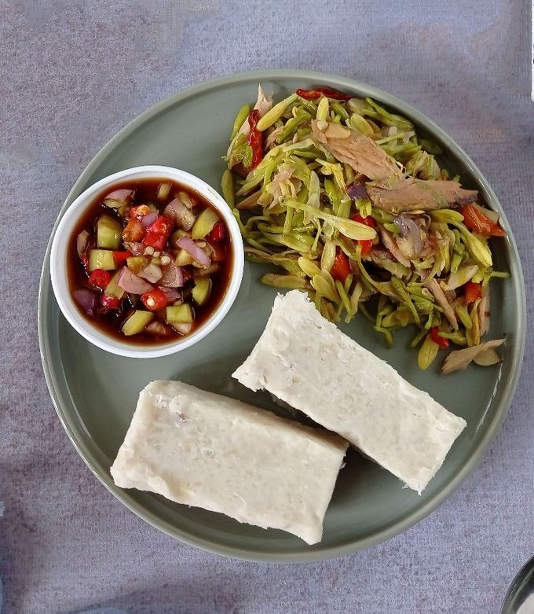
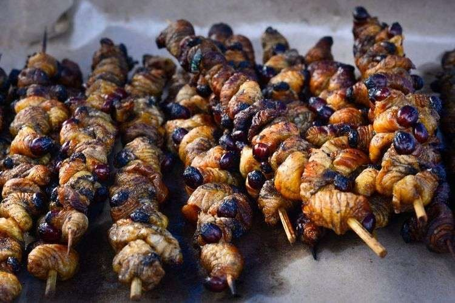

Papeda
Makanan khas Papua berbahan dasar sagu, disajikan dengan kuah kuning atau ikan bakar.

Ikan Bakar Manokwari
Ikan bakar khas Manokwari dengan sambal pedas kasar yang menjadi ciri khasnya.

Sagu Lempeng
Kue tradisional dari sagu yang dibakar, populer di banyak daerah Papua.

Udang Selingkuh
Udang berukuran besar dari Wamena dengan capit menyerupai kepiting.

Keladi Tumbuk
Makanan pokok tradisional masyarakat Papua yang dibuat dari talas tumbuk.

Sate Ulat Sagu
Makanan ekstrem khas Papua dengan cita rasa gurih dan khas, berbahan ulat sagu.